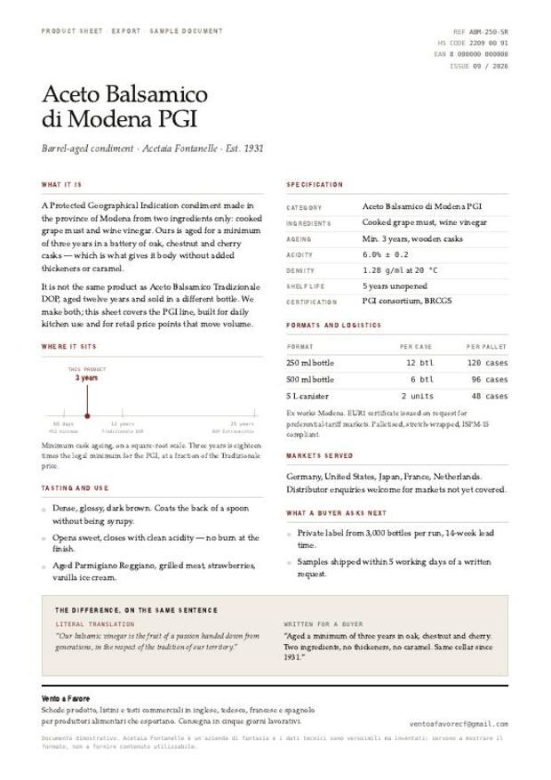
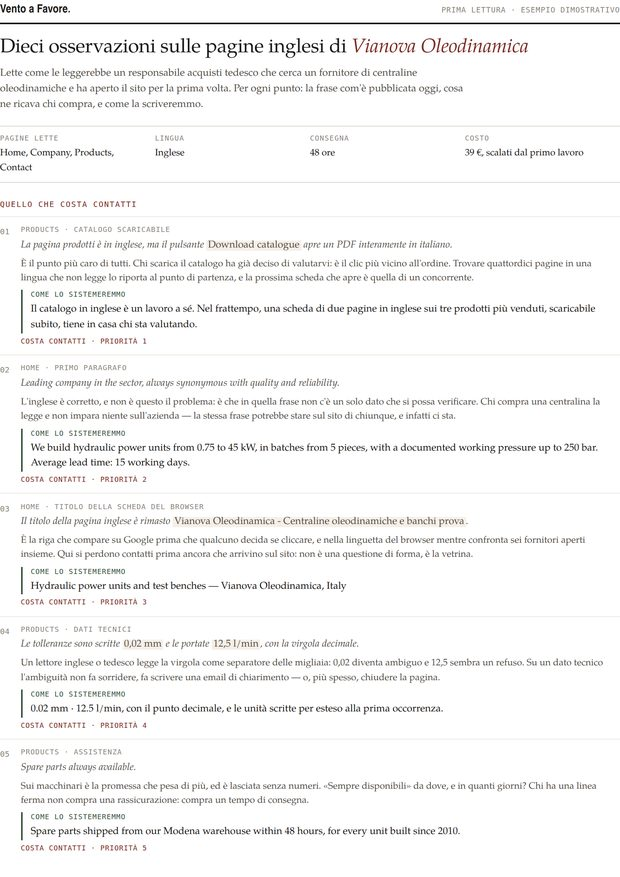
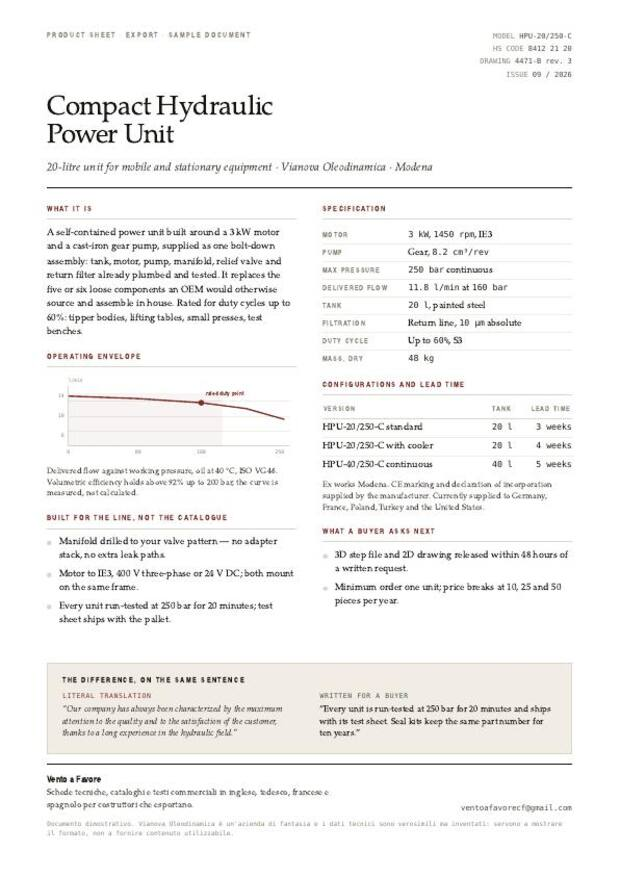

Vento a Favore prepara in lingua straniera i testi commerciali delle aziende italiane che vendono all'estero — agroalimentare, meccanica, ceramica, arredo. Non traduzioni: i contenuti vengono riscritti, perché la frase che convince un cliente italiano e quella che convince un buyer tedesco non sono la stessa frase.
Si può cominciare in piccolo: la prima lettura dei testi costa 39 €, arriva in 48 ore e si scala dal primo lavoro.
Due lingue che quasi nessuno scrive partendo dall’italiano. Il testo si costruisce qui e prima della consegna lo rilegge un professionista madrelingua: la rilettura è compresa nel prezzo, e si dice prima perché è il modo in cui si lavora. Le pagine arabe si consegnano da destra a sinistra, impaginate come si deve.
A sinistra la resa letterale dall'italiano: corretta, e saltata. A destra la stessa informazione scritta come la cerca chi deve comprare.
Our balsamic vinegar is the fruit of a passion handed down from generations.
Aged a minimum of three years in oak, chestnut and cherry. Two ingredients, no thickeners, no caramel. Same cellar since 1931.
Stessa affermazione. La seconda si può verificare, e quindi si può credere.
A dry Lambrusco, with a fine and persistent perlage.
Dry — not the sweet Lambrusco sold abroad in the 1980s. Bottle-fermented, pale rosé, high acidity. Drink it cold with cured meat.
All'estero la parola «Lambrusco» porta con sé un'idea sbagliata. Il testo deve prima toglierla di mezzo.
Compact hydraulic power unit, ideal for every application need.
3 kW, 250 bar, 11.8 l/min at 160 bar. 20-litre tank, IP55. Run-tested at 250 bar; test sheet with every unit.
Un ufficio acquisti non compra da una descrizione: compra da una riga che può incollare nel proprio capitolato.
Una tacca, un sito. Presi dal catalogo espositori della fiera, i primi cento italiani in ordine alfabetico, tutti, senza sceglierne nessuno; otto siti non si sono aperti e sono rimasti fuori dal conto. Nel dubbio la classificazione è andata sempre a favore dell’azienda: quei numeri sono un pavimento, non un soffitto. L’elenco riga per riga esiste e si può chiedere.
Il PDF di una pagina che un distributore chiede appena scrive. Metà racconto, metà dati: formati, dati di confezionamento, specifiche tecniche, certificazioni, tempi di consegna, incoterm.
La pagina «chi siamo», riscritta come fatti invece che come aggettivi: da quando, in quale stabilimento, con quali controlli, che cosa si fa che gli altri non fanno. È la pagina che regge il prezzo.
Le schede dello shop, fino a 15 prodotti. Su una vendita diretta non c'è un agente che spiega: la descrizione resta l'unico venditore presente.
Per le lingue diverse dall'inglese il lavoro è volutamente circoscritto ai documenti di natura tecnica e commerciale — schede, listini, specifiche — dove il contenuto sono i fatti e non il registro idiomatico. È la scelta che tiene alta la qualità invece di prometterla.
Tutti i documenti a listino: schede, pagine di presentazione, descrizioni e-commerce, testi per fiere e per la corrispondenza con i buyer.
Lingua principaleLa Germania è il primo mercato europeo dell'export italiano, nel cibo come nella meccanica. Schede prodotto e specifiche tecniche.
Su richiestaSchede prodotto e specifiche tecniche, con la terminologia di disciplinari e norme resa correttamente.
Su richiestaSchede prodotto e specifiche tecniche, utili anche per i mercati dell'America latina.
Su richiestaSchede prodotto e specifiche tecniche per il mercato cinese. Il testo si costruisce qui — struttura, argomento, i dati che un compratore cerca — e prima della consegna lo rilegge e lo corregge un professionista madrelingua.
Con rilettura madrelinguaArabo standard moderno, la lingua del materiale commerciale scritto nel Golfo e in Nord Africa. Le pagine si consegnano da destra a sinistra, impaginate come si deve. Stessa rilettura madrelingua.
Con rilettura madrelinguaNon descrizioni di quello che si potrebbe fare: i documenti finiti, come vengono consegnati. Qui tre; sulla pagina dei documenti ci sono tutti e cinque. Le aziende rappresentate sono di fantasia e i dati sono verosimili ma inventati — servono a mostrare il formato, non a fornire contenuto utilizzabile.

Aceto balsamico IGP. Metà racconto, metà dati: acidità, densità, pezzi per cartone, certificazioni.
Apri il PDF →
Dieci osservazioni sui testi inglesi di un costruttore di centraline. È il documento da 39 €, per intero.
Apri il PDF →
Centralina oleodinamica. Curva di portata, specifiche, configurazioni e tempi di consegna.
Apri il PDF →Ogni documento è consegnato in PDF impaginato e in testo modificabile, così può essere ripreso e aggiornato senza dipendere da nessuno.
| Lavoro | Prezzo |
|---|---|
| Prima lettura dei testi in linguadieci osservazioni · 48 ore · si scala dal primo lavoro | 39 € |
| Scheda prodottouna pagina, PDF impaginato · 5 giorni | 140 € |
| Cinque schede prodottostesso impianto · 8 giorni | 550 € |
| Pagina di presentazione«chi siamo», storia, metodo · 5 giorni | 180 € |
| Descrizioni e-commercefino a 15 prodotti · 10 giorni | 380 € |
| Pagina di presentazione e tre schedeil pacchetto per chi va in fiera · 10 giorni | 690 € |
| Stessa scheda in una seconda linguatedesco, francese o spagnolo, ordinata insieme alla prima · 3 giorni | 84 € |
| Cinese semplificato o arabosovrapprezzo sulla riga corrispondente · comprende la rilettura di un professionista madrelingua · cinque giorni in più | +50 % |
I giorni sono lavorativi e si contano da quando arrivano i materiali, non dall'ordine: se etichetta e dati arrivano lunedì, la scheda è pronta il lunedì successivo. Le cinque schede condividono lo stesso impianto, per questo costano meno di cinque schede singole e richiedono otto giorni invece di venticinque. Un giro di revisione è compreso. I 39 € della prima lettura si scalano per intero dal primo lavoro affidato entro sessanta giorni, quindi chi comincia da lì non paga due volte. Pagamento a consegna, bonifico o link di pagamento. Per ogni lavoro viene emessa regolare ricevuta.
Capita spesso: un’azienda che lavora benissimo, e una pagina ferma a otto anni fa, o illeggibile dal telefono, o proprio niente. Chi Vi cerca da fuori quella pagina la trova lo stesso, e in quel momento è tutto quello che sa di Voi.
| Una pagina del sito, riscritta in linguafino a 400 parole, impaginata e pronta da caricare · 5 giorni | 79 € |
| Tre pagine del sito, riscritte in linguafino a 1.200 parole, impaginate e pronte da caricare · 8 giorni | 225 € |
| Le pagine del sito riscritte in linguafino a cinque pagine, impaginate e pronte da caricare · 10 giorni | 349 € |
| Cinese semplificato o arabosovrapprezzo sulla riga corrispondente · comprende la rilettura di un professionista madrelingua · cinque giorni in più | +50 % |
I primi due passaggi non costano niente e non fanno partire nessun orologio. I cinque giorni lavorativi si contano da quando arrivano i materiali.
Basta il link alla pagina o la foto dell'etichetta. Nessun modulo da compilare.
Un passaggio del testo attuale viene riscritto gratuitamente, così il giudizio si forma sul materiale dell'azienda e non su un esempio.
Se l'impostazione convince, servono il testo di partenza e i dati del prodotto. Il prezzo è già nel listino, e con il prezzo ci sono i giorni: cinque per una scheda, dieci per un catalogo, tre settimane per un sito. Il conteggio parte da qui, da quando i materiali sono arrivati, non dall'ordine.
Nei giorni dichiarati, in PDF impaginato e in testo modificabile, con un giro di revisione compreso. A seguire, la ricevuta.
Ogni lavoro ha il suo percorso. Apra quello che La riguarda.
La richiesta Gli indirizzi delle pagine in lingua che contano di più. Nient'altro da preparare: leggiamo quello che è già pubblicato.
Entro due giorni lavorativi Arriva il documento con dieci osservazioni, ciascuna con la frase com'è e la frase riscritta. Se non convince, finisce lì e non costa niente.
Giorno 1 Arrivano il testo di partenza e i dati del prodotto. Il conteggio parte da qui, non dall'ordine.
Giorni 2-4 Riscrittura e impaginazione. Quello che non è chiaro si chiede una volta sola, in una email, non in cinque.
Giorno 5 Consegna in PDF impaginato e in testo modificabile, con un giro di revisione entro i dieci giorni successivi.
Giorno 1 Materiali e ordine di priorità: quale documento deve essere pronto per primo.
Giorni 2-3 L'impianto si fissa sul primo documento e si fa approvare prima che gli altri lo seguano. È il motivo per cui più documenti insieme costano meno degli stessi ordinati uno alla volta.
Fino all'ultimo giorno Gli altri seguono quell'impianto, e si consegna tutto insieme.
Settimana 1 Materiali, elenco delle pagine e prima versione della pagina principale, da guardare insieme.
Settimana 2 Le altre pagine, con la stessa forma.
Settimana 3 Prove di lettura dal telefono e dal computer, il dominio intestato a Voi, pubblicazione. Poi trenta giorni per chiedere correzioni.
La prima lettura è dieci osservazioni sui testi in lingua già pubblicati, ognuna con la frase com'è adesso, cosa ne ricava chi compra e come la scriveremmo. Arriva in 48 ore ed è una decisione che si prende da soli, senza riunioni. Se poi il lavoro viene affidato, i 39 € si scalano per intero: è un acconto, non una spesa in più.
Vento a Favore opera dalla provincia di Modena e lavora interamente da remoto, con aziende di tutta Italia. Niente struttura e niente preventivi: i prezzi sono quelli del listino e i tempi quelli dichiarati. I lavori sono firmati da Francesco, che resta l'unico interlocutore dal primo messaggio alla consegna.